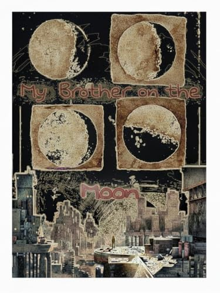

7 dystopian thrillers that run on a timer
Dystopias paced like thrillers — The Warehouse, Tender Is the Flesh, The School for Good Mothers — plus a 68-page indie novella.
One reader's shelf of short books and dark worlds: the canonical dystopias next to the indie novellas nobody means yet. No hype, no sponsorships.

From the author of this site — disclosure
In Ventenstein a sickness opens one hour a day in which ordinary people kill, and the hour never holds still. The gravedigger buries them with a bounty on his own head. 68 pages, free on Kindle Unlimited.
Dystopias paced like thrillers — The Warehouse, Tender Is the Flesh, The School for Good Mothers — plus a 68-page indie novella.
The Plague, Severance, The Fireman, A Beginning at the End, Station Eleven, The End of October, plus a 68-page indie novella.
Needful Things, The Stepford Wives, Harvest Home, We Have Always Lived in the Castle, Ritual, The Children of Dynmouth, plus a 68-page indie novella.
The Ones Who Walk Away from Omelas, The Lottery, Harrison Bergeron, The Dispossessed, Brave New World, The Giver, plus a 68-page indie novella.
Seven dystopias about surveillance, manufactured truth and managed minds, plus a 68-page indie novella.
Seven dystopias about censorship, controlled information and dangerous memory, plus a 68-page indie novella.
Seven post-apocalyptic and dystopian reads in the same weight class as McCarthy's The Road, plus a 68-page indie novella.
Control built from law, fear and ordinary detail: The Power, Children of Men, The Fifth Sacred Thing, Swastika Night, The Water Cure, Red Clocks, plus a 68-page indie novella.
Control that arrives disguised as a gift — We, The Circle, Feed and four more in Huxley's line.
Ordered systems that hide what they cost, and one person left carrying the truth — Lowry to Ogawa, plus a 68-page indie pick.
The Lottery, Handmaid's Tale, The Unit, Kevin, Tender Is the Flesh, The Road and 1 more — each with the club question it starts.
The Lottery, Omelas, Handmaid's Tale, Fahrenheit 451 and 3 more — when the horror is the neighbors, not a dictator.
The dystopias that stay are the short ones: one unbearable rule, calmly enforced. From We to the indie shelf.
The scariest machines aren't broken ones. Societies running exactly as designed, from Brave New World to The Lottery.
Endings that knock instead of kicking the door in — quiet dystopias from On the Beach to The Memory Police.
Short fiction that hits in under two hours — from The Lottery and Omelas to the indie novella on the same shelf.
Sorted by size — Anthem, Repent Harlequin, The Country of the Blind and six more, longest first: the indie novella on the same shelf.
The strongest nightmares weren't written in English: Russia, Austria, Japan, Argentina, Sweden — and a German indie novella in the same tradition.
Von Wir bis Die Wand: kurze dystopische Literatur, die länger bleibt als die Nacht.
Von Samjatin bis Ling Ma — die Spanne reicht von unter 100 bis knapp 400 Seiten, dazu eine neue deutsche Novelle.
The dystopia that needs no dictator — from Camus and The Stand to Severance and a sickness that only takes one hour a day.
A hundred years of stories where violence gets a schedule, a rulebook, or an audience — from The Most Dangerous Game to the indie with the daily window.
The shelf behind 1984: Swastika Night, Limbo, Camp Concentration — plus the least-known book on this list.
Forster's video calls in 1909, Brunner's computer worm, Anderson's brainfeed — and what comes after the feed dies.
Worlds that stay dark and still earn the last page — The Wall, The Pesthouse, The Reapers Are the Angels and four more.
Quiet apocalypses where memory outlives the world — Severance, The Dog Stars, A Canticle for Leibowitz and four more.
Forster's 30 pages from 1909 describe your Tuesday. The horror is that everyone prefers it.
On My Brother on the Moon: a scheduled horror — twenty-three hours you're a person, one hour the sickness owns you.
Quiet bureaucratic dystopias — The Circle, The Memory Police, The Employees — plus a 68-page indie novella.
Closed-system dystopias for Silo readers — Metro 2033, Dark Eden, The Chrysalids — plus a 68-page indie novella.
Rigged games and the machinery behind them — Battle Royale, Red Rising, Scythe — plus a 68-page indie novella.
Collapse textures and held communities — The Road, Station Eleven, The Water Knife — plus a 68-page indie novella.
Six verified first novels, from The City of Ember to Wither, plus the debut I wrote myself.
Quiet dystopias where removal arrives as paperwork — Ice, The Wall, The Unit, Prophet Song and three more.
Matriarchal dystopias from 1905 to a Stella Prize winner — Sultana's Dream to Gather the Daughters, plus one indie with a different hierarchy.
The Zamyatin lineage — 1984, This Perfect Day, The Dispossessed, The Unit, The Memory Police — plus one indie where the sickness keeps a schedule.
Twenty-page traps — The Lottery, Harrison Bergeron, Omelas — plus one 68-page indie that keeps its apocalypse on shift.
Aftermaths from pastoral to countdown — Earth Abides, On the Beach, The Postman — plus one indie where the ending never arrived.
Sterility, surrogacy and scored parents — Jessie Lamb, The Farm, When She Woke — plus one indie where the future is rented hourly.
Implants, algorithms and artificial friends — Feed, Qualityland, Klara and the Sun — plus one indie dystopia with no tech at all.